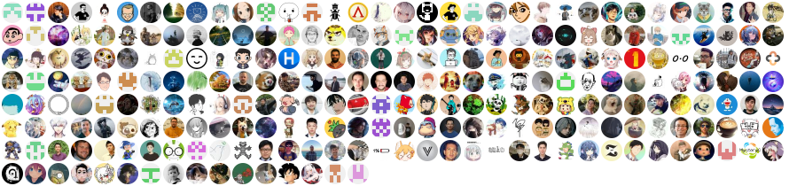
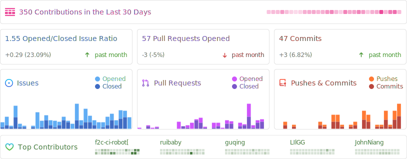

Halo [ˈheɪloʊ]，一款现代化的开源博客/CMS系统，值得一试。

快速开始
Fat Jar
下载最新的 Halo 运行包：
curl -L https://github.com/halo-dev/halo/releases/download/v1.6.0/halo-1.6.0.jar --output halo.jar
其他地址：https://docs.halo.run/getting-started/downloads
java -jar halo.jar
Docker
docker run -it -d --name halo -p 8090:8090 -v ~/.halo:/root/.halo --restart=always halohub/halo:1.6.0
详细部署文档请查阅：https://docs.halo.run/getting-started/install/linux
在线体验（2.0）
- 环境地址：https://demo.halo.run
- 后台地址：https://demo.halo.run/console
- 用户名：
demo - 密码：
P@ssw0rd123..
生态
| 项目 | 状态 | 描述 |
|---|---|---|
| halo-admin | Web 管理端 UI，已内置在主应用 | |
| js-sdk | JavaScript SDK | |
| halo-comment | 独立评论组件，可以非常方便的集成到主题中 | |
| halo-comment-normal | 另外一款评论组件 | |
| halo-mobile-app | 已停止维护 | 移动端管理 APP |
| tencent-cloudbase-halo | 无 | 腾讯云 CloudBase 一键部署配置 |
| halo-theme-* | 无 | GitHub 上开源的 Halo 主题集合 |
许可证
Halo 使用 GPL-v3.0 协议开源，请遵守开源协议。
贡献
参考 CONTRIBUTING。
状态
